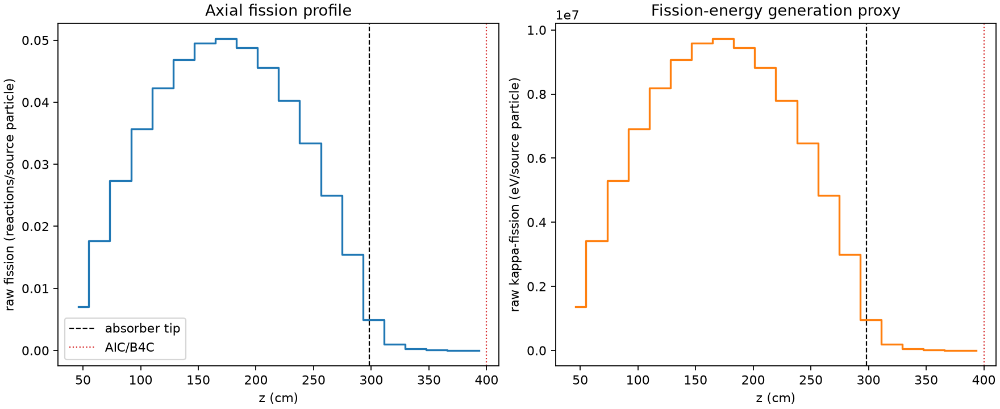
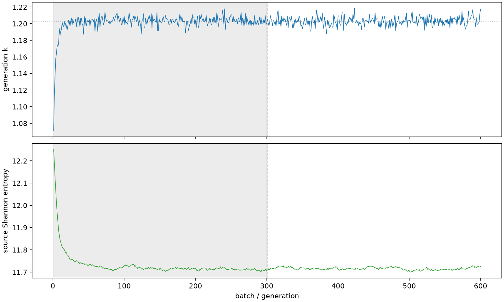

| field | value |
|---|---|
| experiment | V2-STAGE_128_OGRENCI_03-0021 |
| k | 1.2031371058398035 |
| MC standard error | 0.0001880418437764566 |
| seconds | 959.4019291570003 |
| acceptance | not_assessed |
| convergence | review_required |
Completed is output integrity only; physical and statistical review required. Zero tallies do not prove zero production or zero uncertainty.
| diagnostic | value |
|---|---|
| geometric fuel voxels | 5280 |
| zero fission tally voxels | 0 |
| low signal fuel voxels | 682 |
| low signal fission share | 9.882909868296552e-05 |
| low signal kappa share | 9.886786671370246e-05 |
| important fission share | 0.9500998005614406 |
| previous filter included | 4598 |
| duration estimate s | 1562.5173488400023 |
| actual minus estimate s | -603.1154196830021 |
| fission relative MC error | statistics |
|---|---|
| all_geometric_fuel | {"voxels": 5280, "positive_mean_voxels": 5280, "zero_mean_voxels": 0, "undefined_relative_error_voxels": 0, "median": 0.010503876309872665, "p95": 0.4603842571331846, "maximum": 0.9849545225125927} |
| low_signal | {"voxels": 682, "positive_mean_voxels": 682, "zero_mean_voxels": 0, "undefined_relative_error_voxels": 0, "median": 0.40647135720949495, "p95": 0.8119900759488512, "maximum": 0.9849545225125927} |
| important_95pct | {"voxels": 3236, "positive_mean_voxels": 3236, "zero_mean_voxels": 0, "undefined_relative_error_voxels": 0, "median": 0.008501616227467469, "p95": 0.012878668262762776, "maximum": 0.015590370617618232} |
| outside_previous_filter | {"voxels": 682, "positive_mean_voxels": 682, "zero_mean_voxels": 0, "undefined_relative_error_voxels": 0, "median": 0.40647135720949495, "p95": 0.8119900759488512, "maximum": 0.9849545225125927} |
| kappa_fission relative MC error | statistics |
|---|---|
| all_geometric_fuel | {"voxels": 5280, "positive_mean_voxels": 5280, "zero_mean_voxels": 0, "undefined_relative_error_voxels": 0, "median": 0.010492774059730474, "p95": 0.4598702954302056, "maximum": 0.984730529794178} |
| low_signal | {"voxels": 682, "positive_mean_voxels": 682, "zero_mean_voxels": 0, "undefined_relative_error_voxels": 0, "median": 0.4062917051517563, "p95": 0.8101588425743302, "maximum": 0.984730529794178} |
| important_95pct | {"voxels": 3236, "positive_mean_voxels": 3236, "zero_mean_voxels": 0, "undefined_relative_error_voxels": 0, "median": 0.00849211428946788, "p95": 0.012864255397132516, "maximum": 0.015573330942304182} |
| outside_previous_filter | {"voxels": 682, "positive_mean_voxels": 682, "zero_mean_voxels": 0, "undefined_relative_error_voxels": 0, "median": 0.4062917051517563, "p95": 0.8101588425743302, "maximum": 0.984730529794178} |
| axial bin | fission share | kappa-fission share |
|---|---|---|
| 1 | 0.014243819294783928 | 0.014244426142598703 |
| 2 | 0.03591366654272127 | 0.03591347773831855 |
| 3 | 0.05565981487354997 | 0.055659634972692384 |
| 4 | 0.07261061625380304 | 0.07261040698054913 |
| 5 | 0.08601637647450236 | 0.0860161201895646 |
| 6 | 0.09542326836457499 | 0.09542310094516078 |
| 7 | 0.10086074208212063 | 0.10086037639421734 |
| 8 | 0.10220775415207828 | 0.10220711493973551 |
| 9 | 0.09936635256766507 | 0.0993660454165972 |
| 10 | 0.09273706360116474 | 0.09273694649910948 |
| 11 | 0.08202436120594304 | 0.08202421973912023 |
| 12 | 0.06801881916661352 | 0.06801844182294256 |
| 13 | 0.0508446570245737 | 0.05084454514706645 |
| 14 | 0.03139968155577737 | 0.03139955899109343 |
| 15 | 0.010030272513570172 | 0.010031864928664971 |
| 16 | 0.0020183444697119456 | 0.0020190978286889335 |
| 17 | 0.0004765549312055167 | 0.0004767299091985319 |
| 18 | 0.00011400288675779947 | 0.00011404300207293729 |
| 19 | 2.7324634497786212e-05 | 2.7338116201023685e-05 |
| 20 | 6.507404384855692e-06 | 6.510296407291485e-06 |
Histories include the inactive-to-active transition at batch 300. kappa-fission approximates fission energy production, not total heat deposition.

